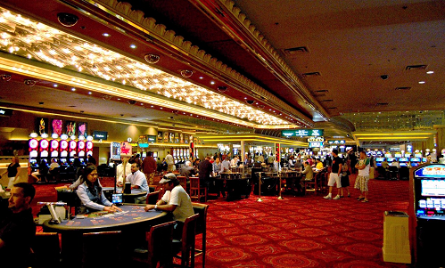

Benvenuti all'Arcella Club, sicuramente la sala giochi più esclusiva della città, dove tutti quanti possono divertirsi!
Una visita al nostro locale promette ore emozionanti in un ambiente esclusivo: Momenti unici ed entusiasmanti, e naturalmente tantissime possibilità di tentare la fortuna. Perché possiate gustare fino in fondo la vostra visita, il nostro staff sarà lieto di spiegarvi personalmente i diversi giochi.
Anche i minori e tutti i non amanti del rischio saranno a loro agio nel nostro Club: avranno infatti la possibilità di immergersi nel mondo del gioco d’azzardo con giocate simboliche e senza alcun rischio, o potranno giocare ai giochi da tavolo, di carte e molto altro!
Vi aspettiamo e vi auguriamo buona fortuna.
Fate il vostro gioco!
Lo staff di Arcella Club
